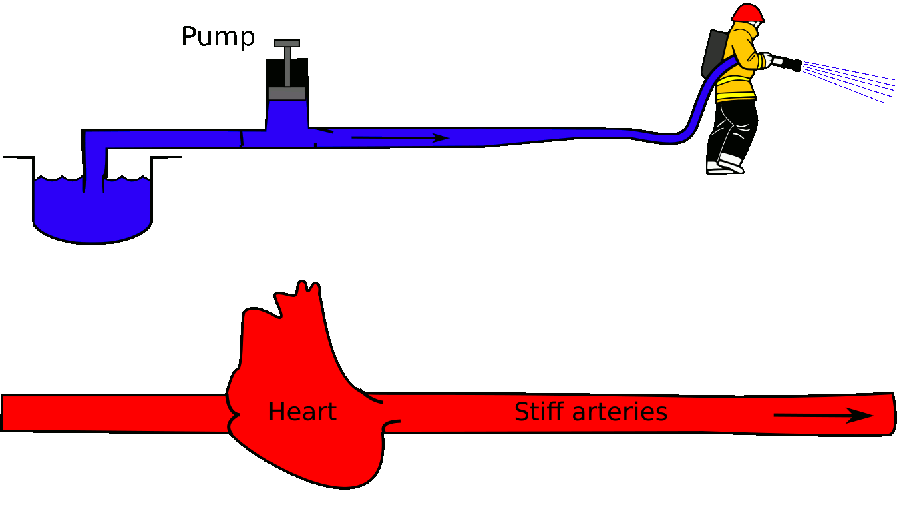
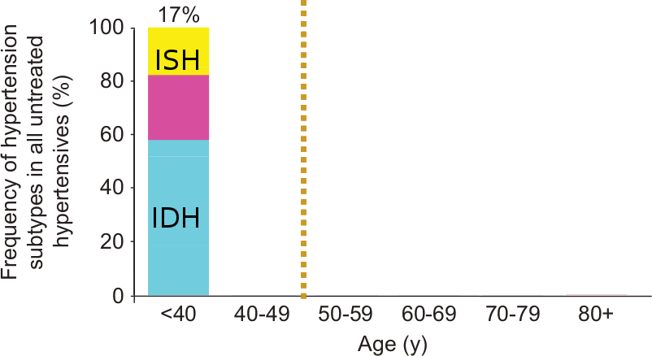
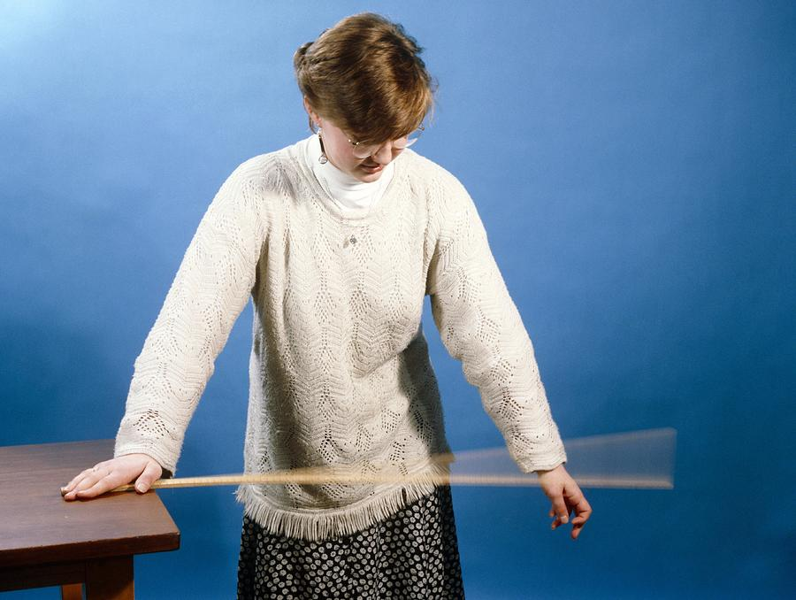
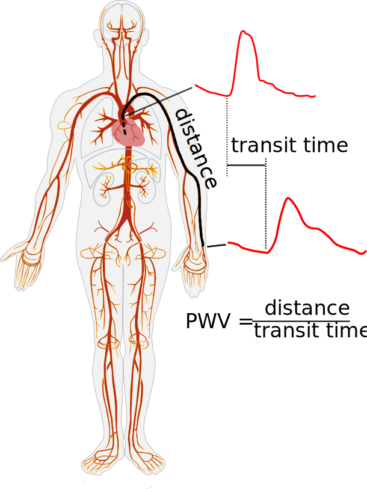
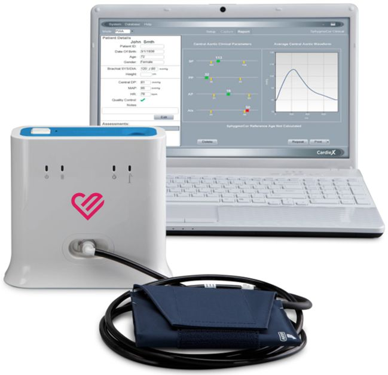
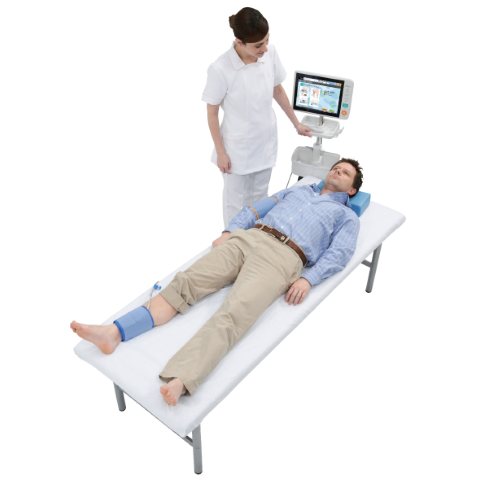
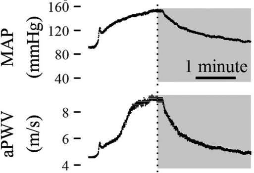
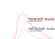
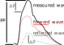
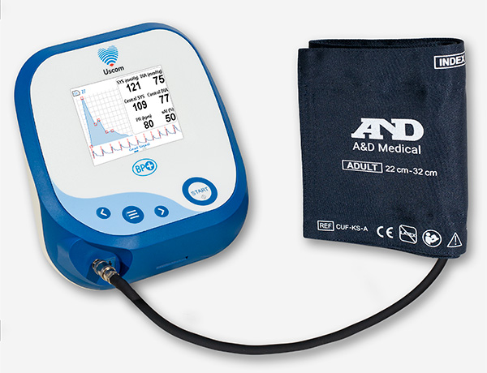

##### HBPRCA Hypertension Masterclass # The role for vascular / cardiac stiffness assessment in the clinic for cardiovascular risk and management ### Dr Mark Butlin (PhD, BE, SFHEA) (he/him) Head of the Blood Pressure and Vascular Function Laboratory<br>Macquarie Medical School, Faculty of Medicine, Health and Human Sciences,<br>Macquarie University. On the land of the Wallumattagal clan of the Dharug Nation. <img src="images/logo_MQ_INT_HOR_RGB_POS.png" height="60px" align="right" alt="Macquarie University crest" style="padding:10px"> <p> </p> <p> </p> <p class="citation">27th April 2022</p> -- ##### HBPRCA Hypertension Masterclass # Arterial stiffness assessment<br>in the clinic ### Dr Mark Butlin (PhD, BE, SFHEA) (he/him) Head of the Blood Pressure and Vascular Function Laboratory<br>Macquarie Medical School, Faculty of Medicine, Health and Human Sciences,<br>Macquarie University. On the land of the Wallumattagal clan of the Dharug Nation. <img src="images/logo_MQ_INT_HOR_RGB_POS.png" height="60px" align="right" alt="Macquarie University crest" style="padding:10px"> -- ##### HBPRCA Hypertension Masterclass ### <span data-id="header">Arterial stiffness assessment<br>in the clinic</span> Dr Mark Butlin (PhD, BE, SFHEA) (he/him) #### Disclosures CardieX AtCor Medical... - providing fractional funding for a post-doctoral researcher. - providing scholarship top-up for a PhD candidate. - past contract research. Past collaborative efforts (unfunded) with: - Blumio - Fledge Innovation Laboratories --- <!-- .slide: data-auto-animate-restart --> <h3>Compliant <span data-id="header">large arteries</span></h3> <h4></h4> <img class="r-stretch" src="images/Windkessel_effect.gif"> -- <h3>Stiff <span data-id="header">large arteries</span></h3> <h4></h4>  -- <!-- .slide: data-background-image="images/TrampolineSimpsons.gif" --> ### <span style="color:white">Compliant large arteries</spab> -- <!-- .slide: data-background-video="images/TrampolineDunkFail.mp4" --> ### <span style="color:white">Stiff large arteries</span> <p class="citation"><a href="https://www.youtube.com/watch?v=vp43BfGvT6U">Source: Weekly Media</a></p> -- <!-- .slide: data-background-image="images/atherosclerosis.gif" data-background-position="right" data-background-size="contain"--> ### *Not* **Athereo**sclerosis #### -- <!-- .slide: data-auto-animate data-background-image="images/arterio.png" data-background-position="right" data-background-size="contain"--> ### **Arterio**sclerosis #### -- ### **Arterio**sclerosis #### Stiffening of arteries <img src="images/Butlin_2015_fig3_7excerpt.png" width="80%"> <p class="citation">Butlin, M. & Avolio, A. P. <a href="https://doi.org/10.1007/978-3-319-03970-1_3" target="_blank">Age-related changes in the mechanical properties of arteries in Mechanical properties of aging soft tissue</a>, Springer, 2015, 37-74.<br>Original data from Langewouters, G. J. et al. J Biomech, 1984, 17:425-35.</p> -- ### Why is arterial stiffness important? #### Major contributor to the predominant form of hypertension.  <p>IDH: isolated diastolic hypertension<br>ISH: isolated systolic hypertension</p> <p class="citation">Nilsson, PM et al. <em>Blood pressure and pulse wave velocity as metrics for evaluating pathologic ageing of the cardiovascular system.</em> Blood Press, 2013, 23:17--30.</p> -- ### Why is arterial stiffness important? #### Major contributor to cardiovascular events and death. <img src='images/Vlachopoulos2010.png' width='85%' align="left"> <p class="citation">Vlachopoulos, C et al. <wm>Prediction of cardiovascular events and all-cause mortality with arterial stiffness: a systematic review and meta-analysis</em>. J Am Coll Cardiol, 2010, 55:1318--27.</p> --- <!-- .slide: data-auto-animate-restart --> ## Arterial stiffness measurement -- ### Arterial stiffness measurement #### Paraphrasing Sir Isaac Newton: A wave travels faster through a stiffer material than a less stiff material. <img class="fragment" data-fragment-index=1 src="images/PWVslow.gif" width=50% align="left">  <p class="fragment citation" data-fragment-index=2>Andrew Lambert Photography</p> -- ### Arterial stiffness measurement #### Pulse wave velocity  <p class="citation">Adapted from Butlin, M.; Qasem, A.; Battista, F.; Bozec, E.; McEniery, C. M.; Millet-Amaury, E.; Pucci, G.; Wilkinson, I. B.; Schillaci, G.; Boutouyrie, P. & Avolio, A. P. Carotid-femoral pulse wave velocity assessment using novel cuff-based techniques: comparison with tonometric measurement. Journal of Hypertension, 2013, 31, 2237-2243.</p> -- ### Arterial stiffness measurement #### Carotid-femoral pulse wave velocity <img src="images/PWVcarotid_femoral.svg" width=40% align="left"> <p class="citation">Adapted from Butlin, M. & Avolio, A. P. Age-related changes in the mechanical properties of arteries. Mechanical properties of aging soft tissue, Springer International Publishing, 2015, 37-74.</p> -- ### Arterial stiffness measurement #### Some commercial devices for carotid-femoral pulse wave velocity measurement <table> <tr> <th></th> <th>device (alphabetical order)</th> <th>carotid pulse</th> <th>femoral pulse</th> </tr><tr> <td></td> <td><a target="_blank" hef="https://atcormedical.com/">CardieX AtCor SphygmoCor XCEL</a></td> <td>tonometer</td> <td>cuff</td> </tr><tr> <td><img src="images/device_pwv_complior.jpg" height="65px"></td> <td><a target="_blank" href="http://www.complior.com/">Complior Analyse</a></td> <td>tonometer</td> <td>tonometer</td> <tr></tr> <td><img src="images/device_pwv_pulsepen.jpg" height="65px"></td> <td><a target="_blank" href="http://pulsepen.com/">DiaTecne PulsePen</a></td> <td>tonometer</td> <td>tonometer</td> </tr><tr> <td></td> <td><a target="_blank" href="https://fukuda.com/products/vs-2000/">Fukuda VaSera</a></td> <td>brachial cuff</td> <td>cuff</td> </tr><tr> <td></td> <td>Vicorder (still available?)</td> <td>cuff</td> <td>cuff</td> </tr> </table> <p class="citation">Other devices exist that use assumptions to simplify pulse wave velocity estimation, e.g. <a href="https://www.tensiomed.com/">Arteriograph</a>; <a href="https://technovationusa.com/vitalscan/">Vitalscan</a>.</p> -- ### Arterial stiffness measurement #### Pulse wave velocity <img src="images/PWV 2016 Albert taking a pulse.jpg" width="75%"> -- ### Arterial stiffness measurement #### Pulse wave velocity - blood pressure as a confounder <div style="float:left; margin:0; width:50%;">  <p class="citation">Butlin, M. et al. Pressure dependency of aortic pulse wave velocity in-vivo is not affected by vasoactive substances that alter aortic wall tension ex-vivo Am J Physiol Heart Circ Physiol, 2015, 308, H1221-H1228.</p> </div> <div style="float:left; margin:0; width:50%;" class="fragment" data-fragment-index="1"> <p>A high arterial stiffness (PWV) could be due to:</p> <ul> <li>arterial stiffenning (arteriosclerosis)</li> <li>high blood pressure</li> <li>arterial stiffenning <em>and</em> high blood pressure</li> </ul> </div> --- <!-- .slide: data-auto-animate-restart --> ## Arterial stiffness estimation -- <!-- .slide: data-auto-animate data-background-video="images/Superposition of water waves.mp4" data-background-video-muted="TRUE" data-background-video-loop="TRUE"--> ### <span style="color:white">Arterial stiffness estimation</span> #### <span style="color:white">Augmentation index</span> <p class="citation"><a href="https://www.youtube.com/watch?v=WJujQsJ9ikU">https://www.youtube.com/watch?v=WJujQsJ9ikU</a></p> <!-- <video data-autoplay src="images/Superposition of water waves.mp4" muted="TRUE"></video> --> -- ### Arterial stiffness estimation #### <div class="r-stack">   </div> <div class="fragment" data-fragment-index="2"> $$\mathrm{augmentation~index}=\dfrac{\mathrm{augmentation~pressure}}{\mathrm{pulse~pressure}}$$ </div> <p class="citation fragment" data-fragment-index="1" >AP: augmentation pressure; PP: pulse pressure.</p> -- ### Arterial stiffness estimation #### Some commercial devices for augmentation index measurement <table> <tr> <th></th> <th>device (alphabetical order)</th> <th>pulse acquisition</th> </tr><tr> <td></td> <td><a target="_blank" hef="https://atcormedical.com/">CardieX AtCor SphygmoCor XCEL</a></td> <td>brachial cuff</td> </tr><tr> <td><img src="images/device_pwv_complior.jpg" height="65px"></td> <td><a target="_blank" href="http://www.complior.com/">Complior Analyse</a></td> <td>radial tonometer</td> <tr></tr> <td><img src="images/device_pwv_pulsepen.jpg" height="65px"></td> <td><a target="_blank" href="http://pulsepen.com/">DiaTecne PulsePen</a></td> <td>radial tonometer</td> </tr> <tr> <td><img src="images/device_tensiomed_arteriograph.jpg" height="65px"></td> <td><a href="https://www.tensiomed.com/">Tensiomed Arteriograph</a></td> <td>brachial cuff</td> </tr> <tr> <td></td> <td><a href="https://www.uscom.com.au/">Uscom BP+</a></td> <td>brachial cuff</td> </tr> <!-- <tr> <td></td> <td><a target="_blank" href="https://fukuda.com/products/vs-2000/">Fukuda VaSera</a></td> <td>brachial cuff</td> <td>cuff</td> </tr> --> <!-- <tr> <td></td> <td>Vicorder (still available?)</td> <td>cuff</td> <td>cuff</td> </tr> --> </table> <p class="citation">Ambulatory blood pressure devices that estimate aortic blood pressure often also calculate augmentation index, e.g. <a href="https://bplab.com/">BPLab</a>; <a href="https://www.iem.de/">Mobil-o-graph</a>; <a href="https://www.suntechmed.com/">Suntech Oscar2</a>.</p> --- <!-- .slide: data-auto-animate-restart --> ## Arterial compliance -- ### Arterial compliance #### - The less stiff an artery is, the more it will extend (increase diameter) as pressure moves from the diastolic point to the systolic point. - Requires measurement of minimum and maximum artery diameter within a cardiac pulse, coupled with a blood pressure measurement. - Techniques to do so include ultrasound and MRI. - Not addressed in this talk as the clinical application/devices for compliance measurement are limited. --- <!-- .slide: data-auto-animate-restart --> ## Advantages and disadvantages of arterial stiffness measurement and estimation -- ### Advantages and disadvantages of arterial stiffness measurement and estimation #### Carotid-femoral pulse wave velocity <div style="float:left; margin:0; width:50%;"> <ul> <li>Direct measure of arterial stiffness.</li> <li>Stronger evidence for clinical utility (see presentation Prof. James Cameron).</li> </ul> </div> <div style="float:left; margin:0; width:50%;"> <ul style="color:red" class="fragment"> <li>Learning curve for tonometry pulse acquisition.</li> <li>Difficult to correct for confounding blood pressure effect (corrections in research, but limited in consumer space e.g. CAVI0).</li> <li>Takes a bit longer than a brachial cuff blood pressure measurement.</li> </ul> </div> <img src="images/device_pwv_complior.jpg" height="130px" align="left"> <img src="images/device_pwv_pulsepen.jpg" height="130px" align="left"> -- ### Advantages and disadvantages of arterial stiffness measurement and estimation #### Augmentation index <div style="float:left; margin:0; width:50%;"> <ul> <li>Can be as easy as a normal automatic brachial cuff measurement.</li> <li>As quick as a brachial cuff blood pressure measurement.</li> <li>Heart rate dependent, but can be corrected for in device software.</li> </ul> </div> <div style="float:left; margin:0; width:50%;"> <ul style="color:Red" class="fragment"> <li>Not a direct measure of arterial stiffness.</li> <li>Not possible to correct for confounding blood pressure effect.</li> <li>Cannot compare between devices (different devices give different values of augmentation index).</li> <li>Evidence for clinical utility is weaker.</li> </ul> </div> <img src="images/device_pwv_complior.jpg" height="130px" align="left"> <img src="images/device_pwv_pulsepen.jpg" height="130px" align="left"> <img src="images/device_tensiomed_arteriograph.jpg" height="130px" align="left"> --- ##### HBPRCA Hypertension Masterclass # The role for vascular / cardiac stiffness assessment in the clinic for cardiovascular risk and management ### Dr Mark Butlin (PhD, BE, SFHEA) (he/him) Head of the Blood Pressure and Vascular Function Laboratory<br>Macquarie Medical School, Faculty of Medicine, Health and Human Sciences,<br>Macquarie University. On the land of the Wallumattagal clan of the Dharug Nation. <img src="images/logo_MQ_INT_HOR_RGB_POS.png" height="60px" align="right" alt="Macquarie University crest" style="padding:10px"> <p> </p> <p> </p> <p class="citation">27th April 2022</p>